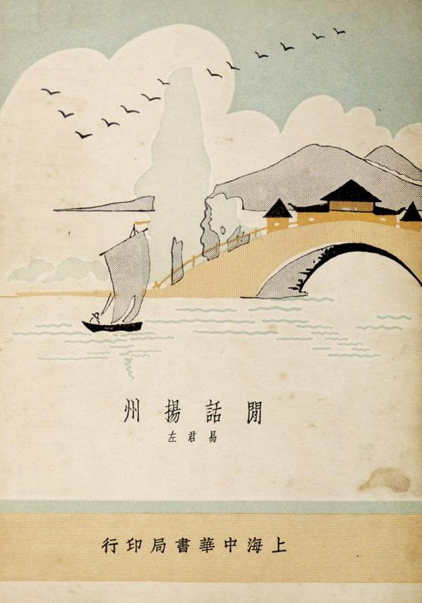

话说毛润之《沁园春。雪》一词在柳亚子的不懈努力下最终得以发表，但它的发表很快在江湖上引发了一场昏天黑地的雪战。 交战双方的领军人物一个是柳亚子， 另一个就是易君左。
易君左的名字， 今天不太为人知晓， 但在民国时期， 他可是名人， 有对联为证：
左舜生姓左不左，易君左名左不左，两君胡适,其于右任乎;
梅兰芳伶梅之梅，陈玉梅影梅之梅，双玉徐来,是言菊朋也。
易君左闲话扬州，挑起扬州闲话，易君，左矣;
唐生智誓守南京，导致南京失守，唐生，智乎？
说起易君左， 都要说《闲话扬州》，这是一个说烂了的话题，但因为与后面的故事有关，又不得不说。
在中国历史上有一本禁书，它不是因为政治，宗教，色情的原因被官方封杀的，而是在中国言论最自由的时期和言论最自由的地方上海被禁止发行的。这本书就是《闲话扬州》，作者易君左， 中华书局1934年出版。 它为什么被封杀？ 因为它伤害了扬州人民的感情，引起扬州人民的公愤。

易君左为什么写闲话扬州？是因为闲的，因为淞沪战事，他工作的江苏省教育厅迁到扬州，刚到扬州的时候，整日无所事事，游山玩水。游玩之余，顺带写点游记，后来被他的同乡上海中华书局编辑所所 长舒新城发现了，拿去发表，竟然很畅销。然后就惹出麻烦了。书中对扬州人的生活习惯颇多批评，有点类似丑陋的中国人的扬州版。这也难怪，当时国难当头，看到扬州人每天悠闲懒散的生活方式，喝茶，洗澡，泡妞，抽大烟，作为一个风风火火的湖南人，他心里着急啊。但易君左显然犯了一个错误，用现在的话说就是情商低，他不知道人是不喜欢批评的，群体就更不能批判. 要批评也可以，把全体包括一起批评，比如鲁迅骂整个中国人，怎么骂都没关系。如果你单独批评某个地方的人，那就是地域歧视。于是扬州人民表现了空前的团结，易君左你什么意思？你对扬州有多少了解？扬州有那么多正能量的人和事你不写, 专写我们落后的东西，而且还夸大事实，还说什么天下妓女出扬州，真是是可忍孰不可忍！他们集会请愿，成立了究易团，一定要严惩易君左，不达目的誓不罢休。打不赢日本人，还打不赢你一个湖南文人吗？
要说易君左的书中说完全没有地域歧视也不是事实，鲁迅就认为有，朱自清也认为有。易君左大概是有一点湖南人优越感的。自晚清湘军崛起以来，湖南人在江湖上比较强势，但这正是江浙人一直耿耿于怀的地方，他们认为长沙的繁华是湘军从江浙烧杀抢劫的结果。易君左在一定程度上是做了替罪羊。
其实地域优越感和地域歧视有点像小孩之间的炫耀。各地在历史上都会有兴旺时期，会有几个名人，也有不行的地方。比如湘军有抬棺出征的左宗棠，也有临阵脱逃的唐生智 。风水轮流转，历史到了上世纪末，当湖湘子弟靠炫耀他们的先辈名人过日子的时候，扬州倒是出了一个国家元首。及至沿海开放，百万湘女下广东，倒有一种特区妓女出湖南的感觉，历史终于给扬州人出了一口恶气。好在现在妓女已不是一个贬义词，而且改称小姐了。
与官二代出身，北大毕业，留过洋的易君左相反，他的湖南老乡毛润之，这个湘潭山村土财主的儿子，师范毕业，一生改不了湘潭口音的土老冒，却不搞湖南人优越感，不但自己不搞，他还告诫他的党员要搞五湖四海，坚决反对地方主义。人的胸襟，大概不是出身和教育决定的。
易君左和柳亚子的背景有些相似，二人都出身名门，都是愤青。柳亚子与汪精卫关系密切，而易君左和周佛海则是好基友，抗战中都分道扬镳。抗战结束后汪氏被蒋介石毁坟灭尸，柳亚子的作品中从此不提此人名字( 以XXX代替)。周佛海也身陷牢狱，昔日亲朋好友避之唯恐不及，只有易君左前往监狱探望，友谊归友谊，政治归政治，易君左的为人似乎更人性化些。